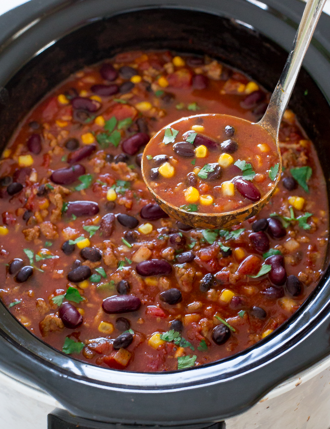

Turkey Chili

This is a turkey recipe I modified from one I found online.
I replaced the kidney beans with black beans and the chicken broth
with chicken bone broth and added sweet potatos, which creates a
very thick and flavorful base. Additionally, I will add other
vegetables to the recipe, such as corn and cabbage.
Ingredients
- Canola oil
- 1 medium yellow onion
- 1 medium bell pepper
- 3 cloves of garlic
- 1 lb of ground turkey or chicken
- 1 can of black beans
- 1 can of diced tomatoes
- Bone broth
- Misc. Spices
- 1 sweet potato, cubed
- Whatever other veggies you wanna add
- Salt & pepper
Directions:
- Saute the onions & peppers in oil for about 5 minutes.
- Add the garlic & turkey. Saute until turkey is brown.
- Add the beans, tomatoes, bone broth, misc. spices. Mix together and
bring to a boil.
- Add the sweet potato and any other veggies you want.
- Add salt & pepper to the recipe any time during the cooking process.
- Let the chili simmer with a lid slightly ajar.
- You can remove it from the heat or not, after that. It doesn't really
matter. The longer it cooks, the softer the more the sweet potatoes break down.